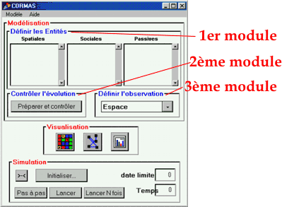

|
Présentation de
Cormas
Il existe quelques environnements de programmation
dédiés à la création de systèmes multi-agents. Nous
pouvons les classer en deux catégoties: certains
d'entre-eux sont orientés vers une communication entre
systèmes distribués, d'autres sont axés vers la
construction de modèles de simulation (voir page des liens).
L'environnement de programmation CORMAS appartient à
cette deuxième catégorie, avec une spécificité dans le
domaine de la gestion des ressources renouvelables. Il
offre un cadre de développement de modèles de simulation
des modes de coordination entre des individus et des
groupes qui exploitent ces ressources en commun. Ce
cadre se structure en trois modules.
- Un premier module permet de définir les entités du
système à modéliser, que l'on appelle des agents
informatiques, et leurs interactions. Ces interactions
s'expriment par des procédures de communication
directe (envois de messages), et/ou par le fait plus
indirect de partager le même support spatial.
- Le second module concerne le contrôle de la
dynamique globale (ordonnancement des différents
événements d'un pas de temps du modèle).
- Un troisième module permet de définir une
observation de la simulation selon des points de vue.
Cette fonctionnalité autorise l'intégration, dans le
processus de modélisation, des modes de
représentation.

Interface de Cormas
CORMAS facilite le travail de construction du modèle en
proposant au sein des ces trois modules des éléments
prédéfinis. Parmi ces éléments figurent les
entités-type, qui sont des classes SmallTalk génériques
à partir desquelles, par spécialisation et affinage,
l'utilisateur définit des entités particulières pour les
besoins de son application.
CORMAS est une plateforme de simulation basée sur
l'environnement de programmation VisualWorks, qui permet
de développer des applications en Smalltalk. Le logiciel
peut être téléchargé. Les guides pratiques sont
disponibles en ligne. Les principaux diagrammes de classe de
l'architecture du noyau sont disponibles.
|
|